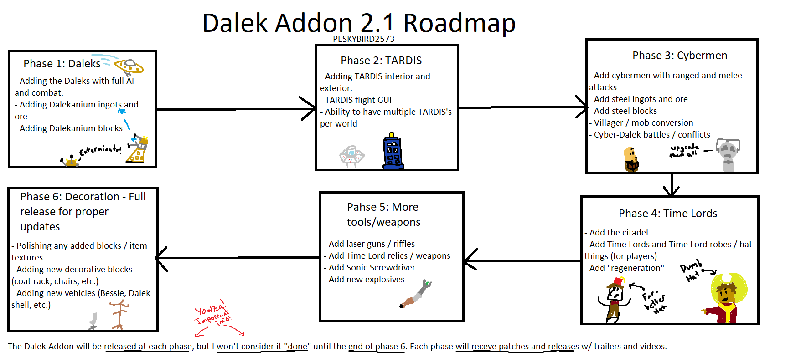

The Dalek Addon version 2 is officaly in development. It will be in a open beta until the first "offical" release of the full version. A roadmap of development can be found here as well.
The first phase of the addon is all about the namesake: Daleks! This is considered version "BETA 2.0.1.0". The numbering goes as follows:
Head to the Downloads page to get the most recent version!
Mojang changed the way addons worked (in code), so I am taking this chance to rebuild the Dalek Addon from the ground up. This being said, it will take some time to catch back up to the original Dalek Addon.
I have decided that you wonderful folks have waited long enough, so I will be relesing each "phase" to the public as I make them. This image shows the current plan to catch the new version up with the original.
See below for roadmap
